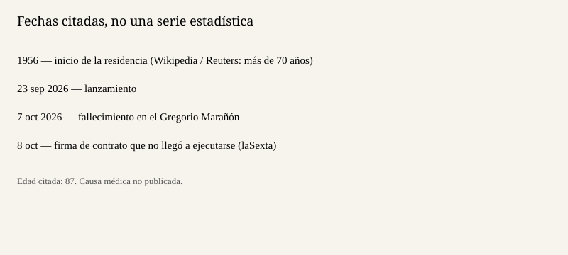

Madrid · vivienda · 9 de octubre de 2026
Maricarmen Abascal murió el 7 de octubre en el Gregorio Marañón, antes de firmar el contrato para volver a su piso
_01.jpg)
Lo que coinciden las redacciones
María del Carmen Abascal Martín, conocida como Maricarmen, murió el 7 de octubre de 2026 en el Hospital General Universitario Gregorio Marañón de Madrid. Tenía 87 años. Reuters, laSexta y la entrada de Wikipedia que resume la cobertura coinciden en la edad, en el hospital y en el hecho de que llevaba ingresada desde el desahucio del 23 de septiembre de la vivienda en la que había residido más de setenta años, desde 1956 según el resumen enciclopédico. Reuters cita al Sindicato de Inquilinas como fuente del fallecimiento y describe el ingreso por ansiedad grave y agotamiento. No hay, en esas piezas, un parte médico con la causa de la muerte.
laSexta añade un dato de calendario: el contrato de alquiler que le habría permitido volver al piso, con Urbagestión, estaba previsto para el jueves 8 de octubre, y la inquilina murió horas antes de firmarlo. Wikipedia, citando a El País, sitúa la muerte a las 19:30 del día 7, acompañada de familiares y de personas del sindicato, y recoge que la abogada Beatriz Duro no hizo pública la causa médica aunque sostuvo que el desahucio había deteriorado la salud. Esa atribución es una declaración de la abogada, no un diagnóstico publicado.
El lanzamiento del 23 de septiembre está documentado en la cobertura previa de este dosier y en Reuters: policía y servicios sociales la sacaron en camilla. El fondo que había adquirido el piso pedía una subida fuerte de la renta. Ese antecedente explica por qué la muerte reabre una protesta. No convierte la muerte en una calificación jurídica.
Lo que es solo una consigna o una frase
Reuters recoge el lema de la marcha del 7 de octubre desde la Puerta del Sol hacia el Congreso: «Esto no es una muerte. Es un asesinato». Es una consigna. No es un auto de un juzgado ni un informe forense. Tratarla como hecho establecido sería complicitar un eslogan. laSexta describe altares improvisados en Sol, en la Real Casa de Correos y frente al portal. Esos son hechos de protesta observables. No miden cuántas personas acudieron. Reuters habla de miles. No hay un recuento policial en las piezas usadas aquí.
La frase de que la solución llegó tarde es del sindicato. Es una valoración. El dato comprobable es más estrecho: el contrato no se firmó porque ella murió antes de la cita. Quien diga que la firma se habría ejecutado al día siguiente describe un plan, no un registro de la propiedad.
El mecanismo que hace falta
Un desahucio en España es la ejecución de una resolución judicial de lanzamiento. No es, por sí solo, un delito de homicidio. Para que una muerte sea un homicidio hace falta un tipo penal, un autor y una relación causal declarada por un tribunal. Nada de eso está en la cobertura del 8 y el 9 de octubre. Lo que sí está es la secuencia: residencia larga, cambio de titular, lanzamiento con camilla, ingreso, muerte antes de un nuevo contrato, y protesta. El Real Decreto-ley 29/2026, ya en vigor desde el 8 de octubre y pendiente de la Diputación Permanente, es el texto del Gobierno sobre vivienda. No es una ley con el nombre de Maricarmen escrito en el articulado, aunque la cobertura política lo vincule al caso. Convalidar o derogar ese decreto no cambia el parte médico que no se ha publicado.
La edad, 87 años, y el ingreso por ansiedad y agotamiento importan porque una persona mayor ingresada puede morir por más de una causa. Decir que el desahucio fue la causa es una hipótesis de la abogada y del sindicato. Decir que fue irrelevante también sería una hipótesis. El dosier se queda en lo publicado: no hay causa médica abierta.
Lo que esta pieza no es
No es una necrológica de partido. No es una prueba de que el decreto de vivienda funcione o fracase. No es el caso de la Fiscalía sobre el entorno del PSOE, que otros medios titularon el mismo día y que es otro expediente. La fotografía es una fachada de archivo en Madrid, elegida por ser un edificio de vivienda reconocible y no un primer plano de dolor. El esquema inferior solo ordena las fechas que las fuentes repiten.

Artículos fuente y puntuaciones
| Medio | Titular | T | N | C |
|---|---|---|---|---|
| Reuters | Spanish woman whose eviction ignited housing protests dies at 87 | 93 | -2 | 90 |
| laSexta | Maricarmen murió horas antes de firmar el contrato de alquiler para recuperar su casa | 86 | -12 | 74 |
| Wikipedia | Desahucio de Maricarmen Abascal | 80 | 0 | 86 |